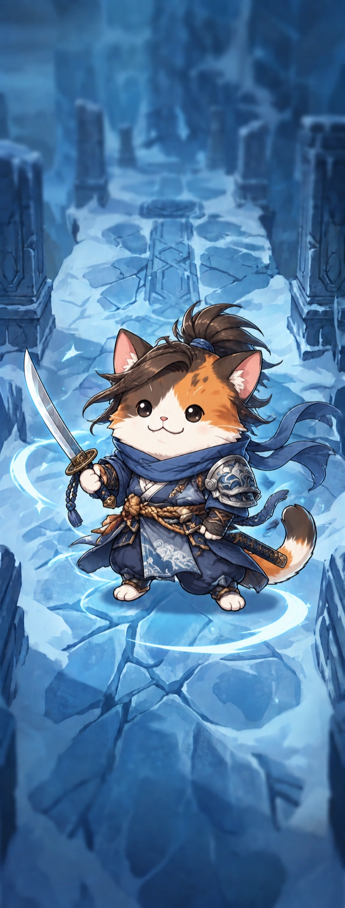
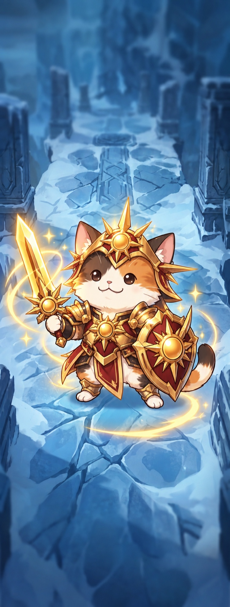

랜드 전적
룽바람 랜드에서 저장한 전적을 확인해보세요.
아직 저장된 랜드 전적이 없습니다.
룽바람 랜드에서 전적 저장 버튼을 누르면 여기에 표시됩니다.
랜드 전적은 현재 브라우저에 저장되며, 다른 탭에서 저장한 내용도 자동으로 반영됩니다.
룽바람 랜드에서 저장한 전적을 확인해보세요.
룽바람 랜드에서 전적 저장 버튼을 누르면 여기에 표시됩니다.
랜드 전적은 현재 브라우저에 저장되며, 다른 탭에서 저장한 내용도 자동으로 반영됩니다.

